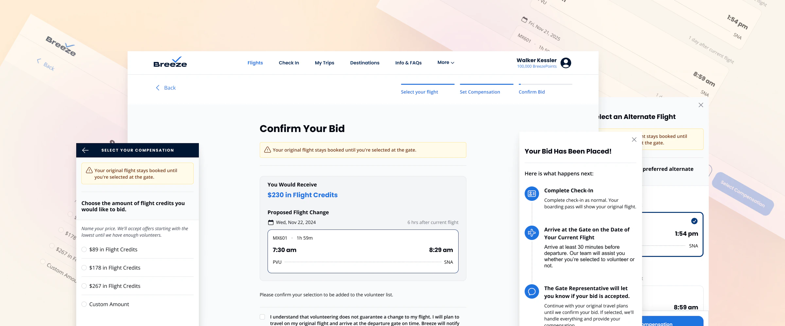
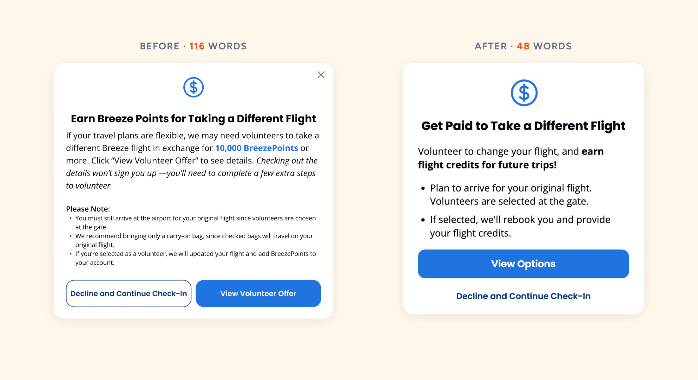
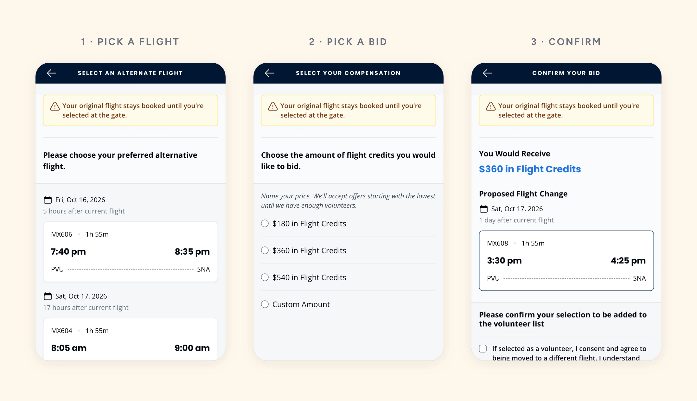
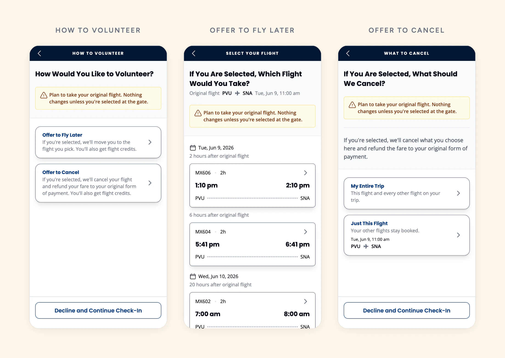
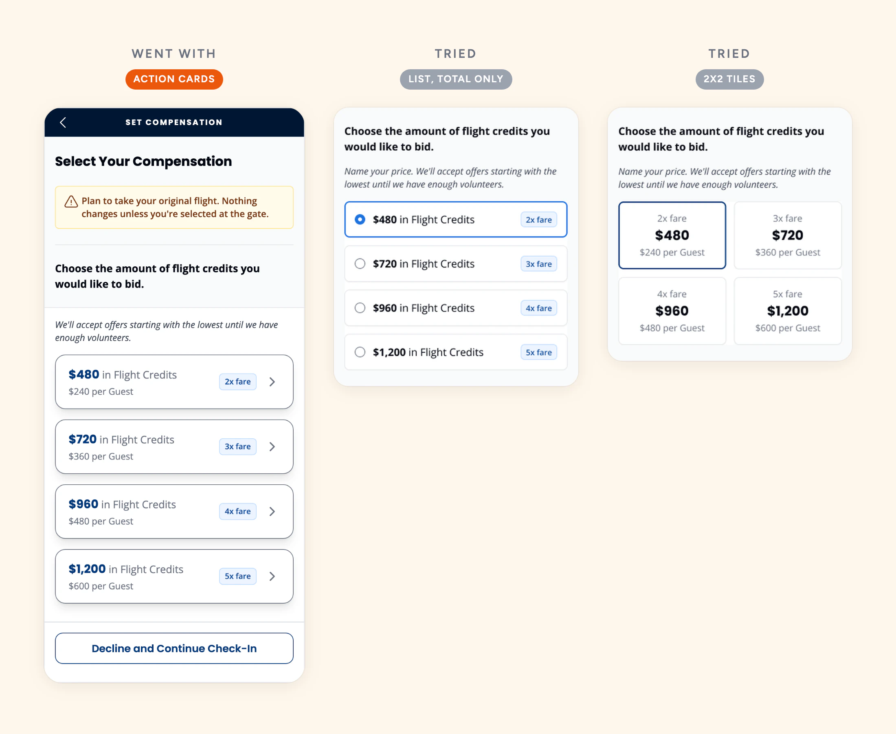
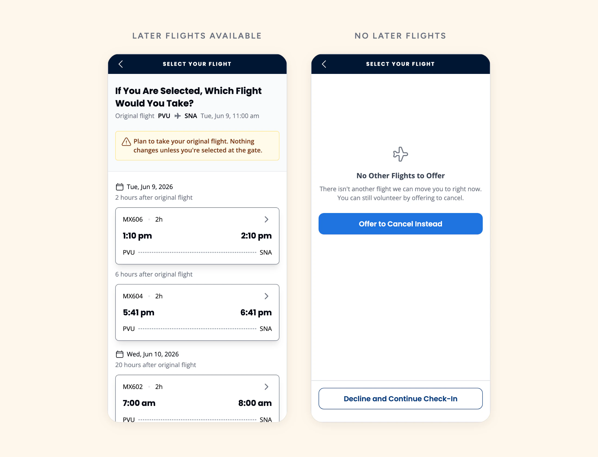
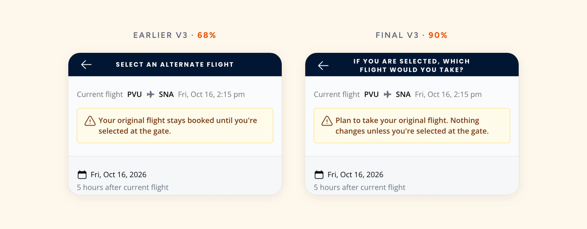

More Ways to Say Yes to an Oversold Flight
Breeze's volunteer offer for oversold flights, and what fixing it actually fixed
Executive Summary
When a flight is oversold, Breeze asks guests at check in if they'll take a different flight for compensation. About 1 in 10 opened the offer. Under 1% placed a bid.
I ran the research and redesigned the flow. People understood it, about a third more opened it, and far more who started went on to bid. Overall bids grew only modestly, mostly on routes with frequent flights. That showed the real limit: the only way to say yes was a later flight, sometimes days later.
V3 adds a second way to say yes, canceling instead of flying later, plus set offers. It's in build now.
Role:
UX/UI Designer, UX Researcher
Duration:
October 2025 to October 2026
Responsibilities:
UX research, UX/UI design, prototyping
The Problem
Most Guests Said No Before They Knew What Was Offered
This started as a copy update: compensation was switching from BreezePoints to flight credits. Then I looked at the funnel.
~11%
of guests who saw the invite opened the offer
<1%
of invited guests placed a bid
I expected people to drop at flight selection, once they saw the alternates didn't fit their plans. They never got that far. Most said no at the invite, which pointed at how the offer was introduced, not the trade itself.
Check in is a get-it-done moment. The invite asked people to read a paragraph about a system they'd never seen.
Research
Watching Six People Try It
I ran a moderated think-aloud test of the live flow on our staging site.
Research Overview
Participants
- Six people, ages 23 to 66
- Mostly infrequent flyers
- No prior Breeze experience
The Flow
- Invite
- Bid amount
- Alternate flight
- Confirm and success
Questions
- Do people understand the offer?
- Where do they get confused?
- What stops them?
The Invite Read as a Hustle
Two of six thought it was a loyalty program. Others read it as something worse.
It doesn't necessarily reflect positively on the airline... it's kind of a hustle to avoid having to pay.
Bidding Felt Like Gambling
Only two of six could explain how bidding worked.
It feels like a game designed to introduce a gambling element to the benefit of the house, which is Breeze.
Flight Selection Raised More Questions
- The original flight wasn't shown next to the alternates
- Some alternates were long delays
- It wasn't clear if a seat on the alternate was guaranteed
- No sense of how many volunteers were needed
I'd rather not be locked into something. I'd rather see what my options are at the gate.
By Confirmation, People Backed Out
Several said they'd quit here and just check in. Timing, airport logistics, and guarantees were all still unclear, so it didn't feel worth the risk.
Design
Say Less on the Invite
Same facts, less than half the words. "Earn BreezePoints" became "Get Paid," and the fine print became two bullets.

Flights First, Then the Bid
People wanted to know if an alternate even worked before naming a price. The old flow asked for a bid first, so they were committing to a number for a flight they hadn't seen.
- Invite
- Pick a bid
- Pick a flight
- Confirm
- Invite
- Pick a flight
- Pick a bid
- Confirm
Reassure the Whole Way
People backed out when the guarantees were unclear. So the answer doesn't live only on the invite. Every step carries it.

Did It Work?
People Understood It
I tested the redesign with 10 people and compared it to the original six. Still small samples, so I treated it as a check before shipping, not proof.
10/10
Understood the Offer
Up from 50%
0
"Too Many Words"
Down from 4 of 6
~2 in 3
Would Explore It
Up from about 40%
5/5
Confidence
That their original flight stays booked
It held up after launch. In a 41-person test this fall, 92% of people on the live flow knew they still show up for their original flight.
More People Opened It
The new flow went live at the end of December 2025.
~11%
opened the offer, the two months before launch
13–15%
opened it every month since, January to September
About a third more guests now get into the offer. Only two months of data exist from before launch, and one was the holiday peak, so read it as a direction more than an exact lift.
More People Finished
Flights first did its job. In the old order, people named a price, then saw the flights, and most quit there. Now they see the flights before they commit to anything.
~1 in 5
who started the old flow placed a bid
~45%
who pick a flight now place a bid
Bids Grew Where the Next Flight Was Close
Overall, bids stayed under 1% of invites. Routes with more frequent flights saw a modest bump. Routes where the next flight was days away barely moved.
The alternates decide it. The more flights someone is offered, the more likely one fits.
| Alternates offered | Placed a bid |
|---|---|
| 1 | About 30% |
| 2 to 8 | About 45% |
| 9 or more | About 50% |
A full flight only needs a few volunteers, and agents take the lowest offers first. What matters is whether each full flight gets enough offers to pick from. And there was only one way to say yes: take a later flight. About a quarter of the flights people picked were three or more days out. On a route like that, no screen makes the next flight sooner.
What Came Next
A Second Way: Don't Fly at All
V3 stops making a later flight the only option. A new first step asks how you'd like to volunteer.

- "Offer" leads both labels. In review, "Cancel Your Flight" read like the button that cancels.
- Both cards open with "If you're selected, we'll." The condition comes first.
- Tapping a card moves you on. The only button is the way out.
Four Set Offers
Four amounts, 2x to 5x the fare, instead of a blank field. People kept asking what to bid, and the first round called bidding gambling. A fare multiple on each offer says what the number means. I went with action cards: tap an offer and you move on, no extra Continue step. A list was also the only layout with test evidence behind it.

When There's No Later Flight
If no other flight works, the screen doesn't dead-end. It points to the other way to say yes. This state hasn't been tested with guests yet.

Testing Caught Something I Broke
I ran four unmoderated rounds over two days, about 160 people. The question that matters most: do you still show up for your original flight? An earlier V3 dropped it to 68%. Two changes on the flight screen brought it back: a title that asks the question with the condition in it, and a callout that leads with the instruction.

| Version | Result |
|---|---|
| Live flow | 92% |
| Earlier V3, 41 participants | 68% |
| Final V3, 39 participants | 90% |
| Pass line | 80% |
The misses were specific. In the earlier V3, 8 of 41 people said they'd go to the gate for the new flight they picked, before anyone had selected them. In the final V3, 2 of 39 did.
Where It Stands
V3 is in build as of October 2026. The number to watch is whether full flights get more offers to pick from, now that waiting days for a later flight isn't the only way to say yes.